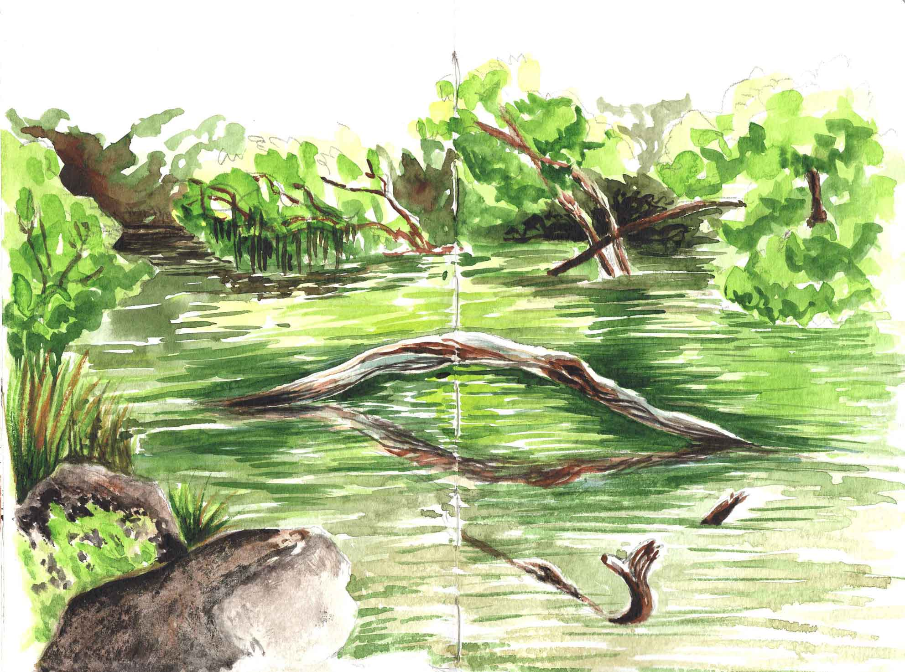
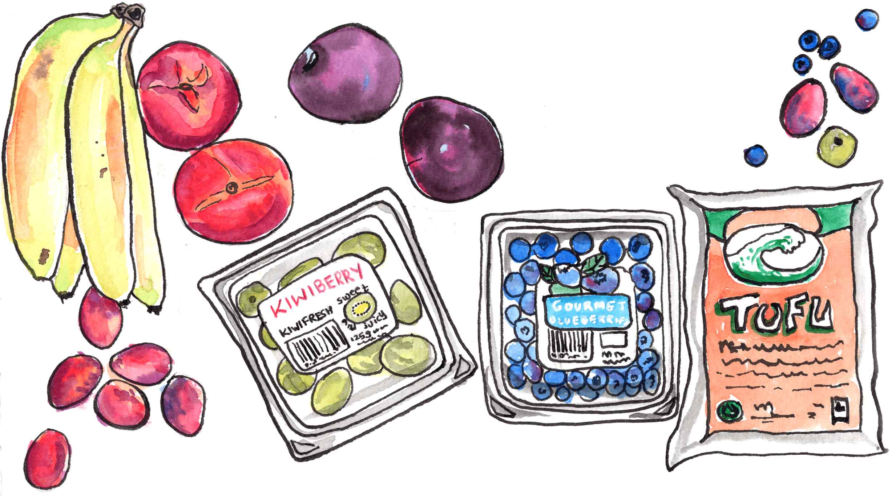
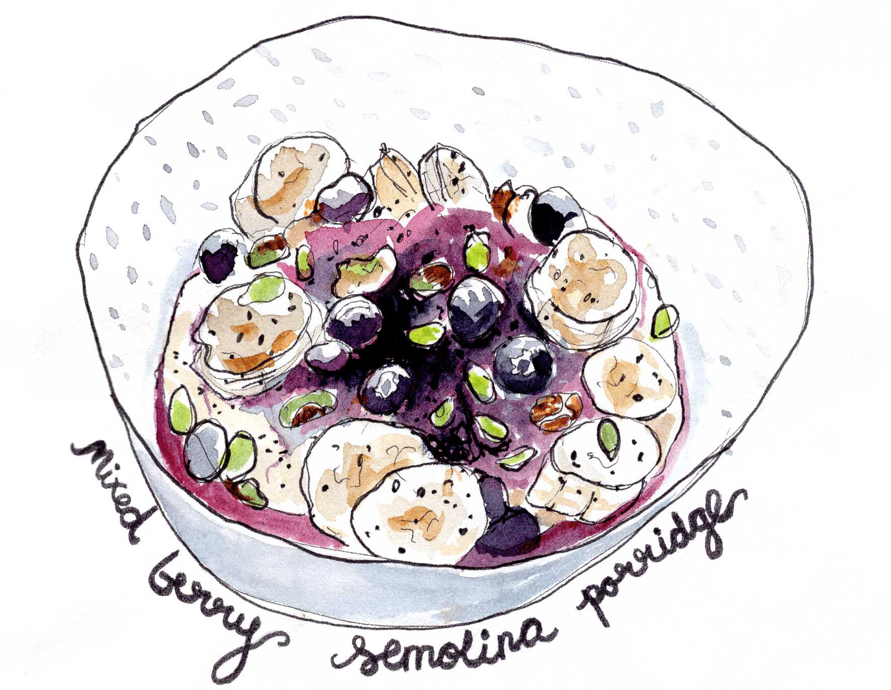

Travel illustration
By recording my travels in a sketchbook, I create rich sensory memories
of time and place - of how I felt in that moment, the colours around me,
the feel of the air, stray snippets of conversations...
I have whittled my travel art kit to a conveniently portable selection
so I can squeeze some drawing in no matter where I go.




Food illustration
Paintings of brightly coloured food I enjoy eating



Animal illustration
Paintings of animal friends


Botanical illustration
Developing patience to draw details of botanical elements is something I am working on. For now, I start with a single element (like a leaf or a single branch), and build outward in degrees till I am satisfied with the composition.